library(tidyverse)
library(cowplot)
library(patchwork)
library(raster)
library(spatstat)
library(KrigR)
library(lubridate)
library(sf)
library(viridis)
library(ggthemes)
library(terra)
library(MetBrewer)Weather data
Packages
About R packages
Make sure to have all R packages installed before running the analysis described in this website.
White mold data
wm_data = read.csv("data_white-mold/WhiteMoldSurveyWrangledData.csv")Removing missing coordinates
wm_data2 = wm_data %>%
filter(!is.na(latitude)) Names of the counties in the dataset
counties = unique(wm_data2$county)
counties[1] "Genesee" "Niagara" "Orleans" "Livingston" "Wyoming"
[6] "Ontario" "Yates" "Chautauqua" "Monroe" central_ny = c("wyoming", "livingston","ontario","yates")Ploting the location of each field
#covert the names to lowercase
map_snap_fun = function(yearr){
counties_lc = tolower(counties)
ny_map_data = map_data('county', region = 'new york')
snap_map = ny_map_data %>%
filter(subregion %in% counties_lc) %>%
mutate(region2 = case_when(subregion %in% central_ny ~ "Central lakes",
!subregion %in% central_ny ~ "Great lakes")) %>%
ggplot()+
geom_polygon(data = ny_map_data,
aes(x=long, y = lat, group = group),
fill= "white",
color = "black",
size =0.3)+
geom_polygon(aes(x=long, y = lat, group = group, fill=region2),
# fill= "gray90",
color = "black",
size =0.3)+
geom_point(data = wm_data2 %>%
group_by(subject) %>%
filter(dap == max(dap),
!is.na(wm)) %>%
ungroup() %>%
filter(year == yearr) ,
size = 0.4,
aes(longitude,latitude, color = wm>0))+
coord_map(xlim = c(-80,-76.7),
ylim = c(41.8, 43.5))+
scale_fill_brewer(palette = "Greens")+
scale_color_colorblind(labels = c("Not-present", "Present"))+
guides(color = guide_legend(override.aes = list(size=2)),
fill = "none")+
theme_minimal()+
labs(x = "Longitude",
y = "Latitude",
fill = "Climate division",
color = "White mold",
title = paste(yearr))+
# facet_wrap(~year, ncol = 1)+
theme(legend.position = "right",
legend.text = element_text(size=7),
axis.title = element_text(size=7),
axis.text = element_text(size=7),
plot.title = element_text(size=10))
snap_map
}ny_map_data = map_data('county', region = 'new york')
counties_lc = tolower(counties)
ny_map = ny_map_data %>%
filter(subregion %in% counties_lc) %>%
mutate(region2 = case_when(subregion %in% central_ny ~ "Central lakes",
!subregion %in% central_ny ~ "Great lakes")) %>%
ggplot()+
geom_polygon(data = ny_map_data,
aes(x=long, y = lat, group = group),
fill= "white",
color = "black",
size =0.3)+
geom_polygon(aes(x=long, y = lat, group = group, fill=region2),
# fill= "gray90",
color = "black",
size =0.3)+
annotate("rect", xmin = -80, xmax = -76.5,
ymin = 41.8, ymax = 43.5,color = "black", alpha = 0)+
# coord_map(xlim = c(-80,-73),
# ylim = c(40, 45))+
coord_map()+
scale_fill_brewer(palette = "Greens")+
theme_void()+
labs(x = "Longitude",
y = "Latitude",
fill = "Climate division")+
theme(legend.position = c(0.1,0.8))
ny_map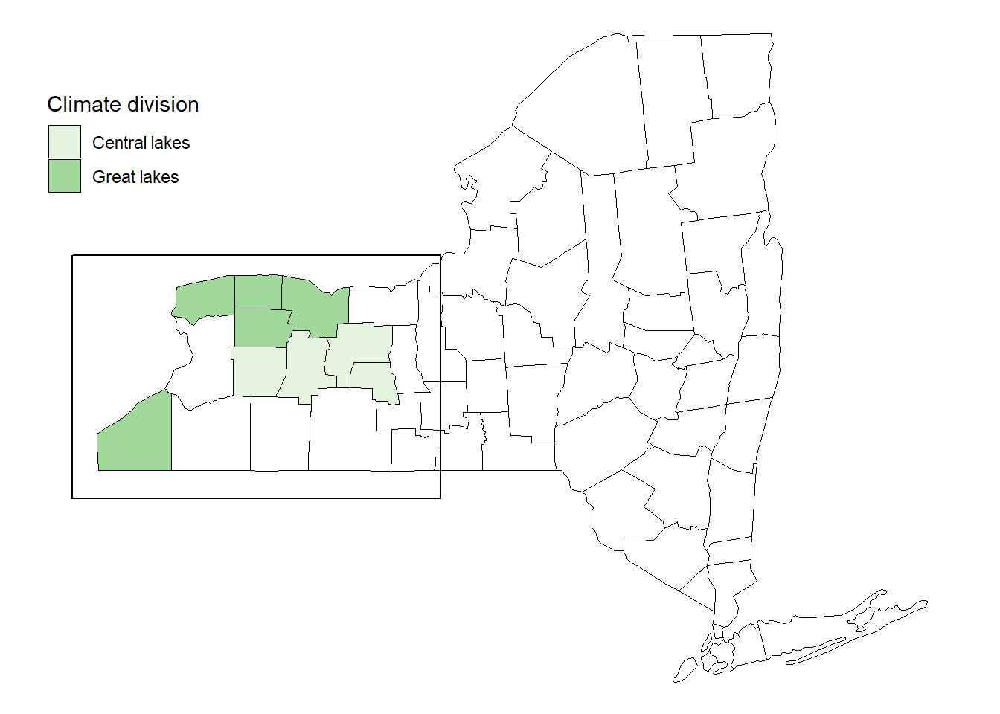
(map_snap_fun(yearr = "2006") +
map_snap_fun(yearr = "2007")+
map_snap_fun(yearr = "2008")+plot_layout(ncol = 2, guides = 'collect')&
theme(legend.position = "bottom",
legend.justification = c("left","center"))) +
(ny_map+plot_layout(guides = 'keep')) +
# plot_layout(ncol = 2)+
plot_annotation(tag_levels = "A")&
theme(legend.text = element_text(size=6),
legend.title = element_text(size=8),
legend.key.size = unit(0.4, 'cm'))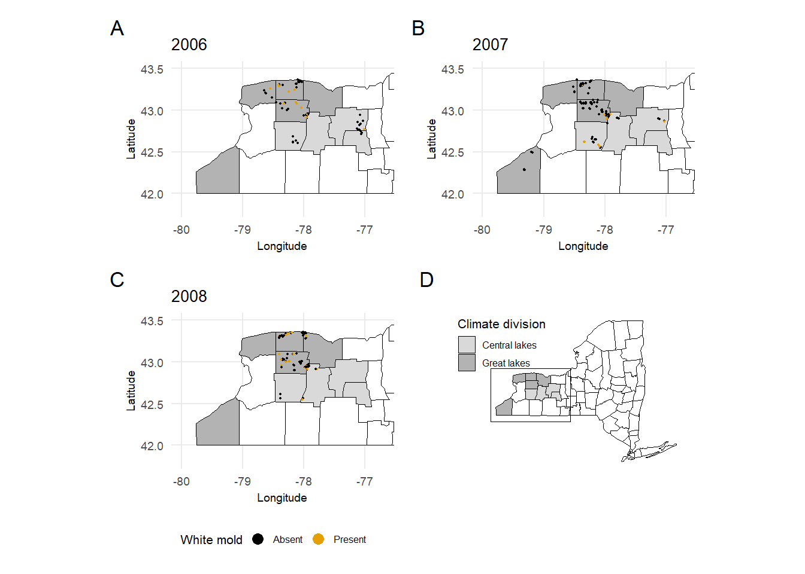
ggsave("figs/maps/maps_fields.png", dpi= 900, height = 6, width = 7, bg = "white")ERA5
ERA5-Land hourly data from 1950 to present Description
0.1° x 0.1°; Native resolution is 9 km
Global
Hourly
January 1950 to present
ERA5 hourly data on pressure levels from 1979 to present Description
Reanalysis: 0.25° x 0.25°
Global
Hourly
1979 to present
Agrometeorological indicators from 1979 to present derived from reanalysis Description
0.1° x 0.1°
Global
Daily
1979 to present
There is a package for downloading the data using R: link
ERA5-Land hourly data from 1950 to present
Besides there is a package for downloading data from Era5, I chose using their website to download the data. The process, using their website or the R pakage require making a request and waiting a long time to get the data.
These are the codes for each variable inside the NETCDF files.
u10,d2m,t2m,lai_hv,lai_lv,src,skt,stl2,sp,tp,swvl1,swvl2,swvl3,swvl4
For now, we are going to use only these variables:
t2m: 2m temperatured2m: 2m dew point temperaturesp: Surface pressureswvl1: Soil moisturestl1: Soil temperature
Relative humidity can be calculated from t2m, d2m, and sp.
Importing data
Here I load the data for each data variable and gather into a single raster object.
2m temperature
t2m_all = raster::stack("data_era5/era5_NY_2006-2008.nc", varname = "t2m")2m dewpoint temperature
d2m_all = raster::stack("data_era5/era5_NY_2006-2008.nc", varname = "d2m")Surface pressure
sp_all = raster::stack("data_era5/era5_NY_2006-2008.nc", varname = "sp")soil moisture
swvl1_all = raster::stack("data_era5/era5_NY_2006-2008.nc", varname = "swvl1")soil temperature
stl1_all = raster::stack("data_era5/era5_NY_2006-2008_2.nc", varname = "stl1")Kringing Test
Kriniging was performed following this tutorial
Weather data
Here I load the temperature data, select one layer (time and day) and plot it together with the New York map
r <- raster::stack("data_era5/era5_NY_2006-2008.nc", varname = "t2m")
a = r$X2008.05.01.00.00.00
raster::plot(a)
points(wm_data2$longitude, wm_data2$latitude)
maps::map('county', region = 'new york', col = "#5E610B", add = TRUE)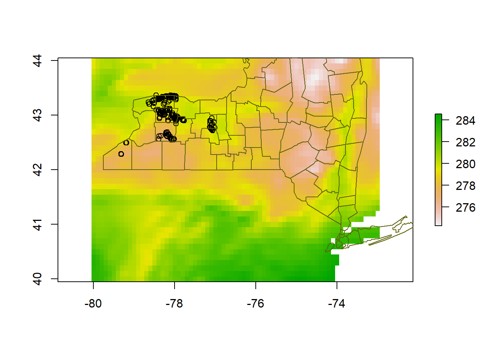
NY shapefile
We will need the New York shapefile to download the digital elevation map, which should be used for kriging. I also filter only the counties that have been surveyed for white mold.
Dir.StateShp <- file.path("data_era5/test")# file.path("shape_files/nc_files")
ny_shape1 = readOGR("shape_files/cugir-007865/cugir-007865/cty036.shp")OGR data source with driver: ESRI Shapefile
Source: "G:\.shortcut-targets-by-id\1tp3HzkoBOZ0949rE6UQ-y3_WEWrnsmPw\WhiteMoldSurvey\01-Kaique\01-Repository\shape_files\cugir-007865\cugir-007865\cty036.shp", layer: "cty036"
with 67 features
It has 80 fields ny_shape = ny_shape1[ny_shape1$NAME %in% c(unique(wm_data2$county)
# "Yates", "Steuben","Allegany", "Cattaraugus","Erie"
),]
plot(ny_shape)
points(wm_data2$longitude, wm_data2$latitude,pch = 19)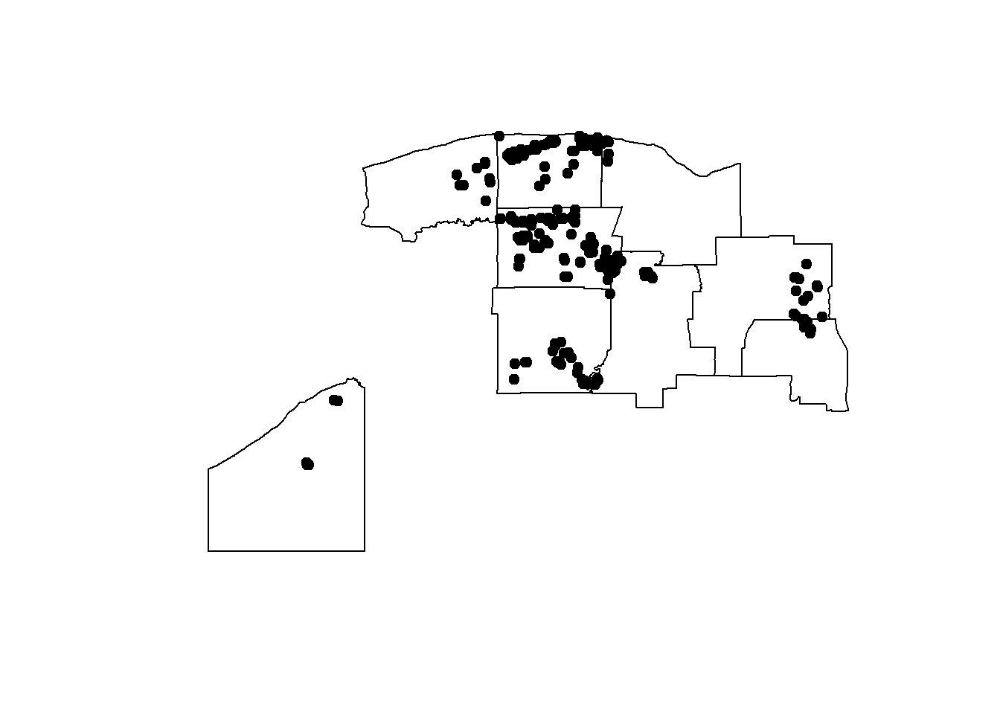
Masking
Here we make make a mask to filter only the data for the selected counties.
The KrigR::mask_Shape() function is diferent from the raster::mask(). The KrigR::mask_Shape() create a new raster object with all cells in the original raster which are at least partially covered by the supplied shapefile. The raster::mask() removes the cells that are partially covered by the shapefile.
Note that the KrigR::mask_Shape() returns a raster filled with 1 (a11). So I transform that raster to a polygon object (a21) and use it as shapefile to mask all the datasets from now on.
# Create a raster covering the selected counties. Note that all cells has the value 1
a11 = mask_Shape(a, ny_shape)
# create a polygon from the previous raster file (this is going to be our mask fot the all datasets)
a21 = rasterToPolygons(a11, dissolve=T)Loading required namespace: rgeosWarning in rasterToPolygons(a11, dissolve = T): package rgeos is not available.
Cannot dissolve# Mask our example dataset
a2 = mask(a,a21)
par(mfrow=c(1,3))
plot(a11, main = "NULL raster file")
plot(a21, main = "Mask")
plot(a2, main = "Masked raster data")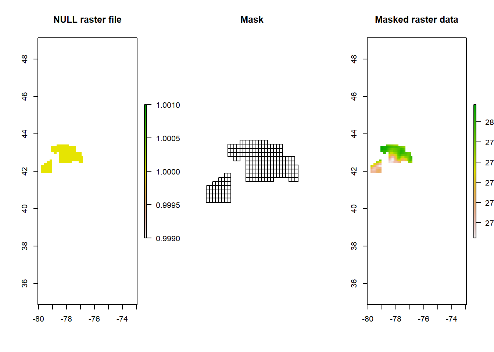
ori_data_df = as.data.frame(a2, xy = T)
colnames(ori_data_df)[3] <- "values"
ori_g= ori_data_df %>%
filter(!is.na(values)) %>%
ggplot()+
geom_tile(aes(x, y, fill = values))+
geom_polygon(data = ny_shape1,
aes(x=long, y = lat, group = group),
fill= NA,
color = "black")+
scale_fill_viridis(option="B")+
coord_map(xlim = c(-80,-76.8), ylim = c(41.8,43.5))+
geom_point(data = wm_data2,
shape = 21,
color = "white",
fill = "black",
aes(longitude,latitude))+
labs(x = "Longitude",
y = "Latitude",
title= "Era5 original")+
theme_minimal()Regions defined for each Polygonsori_g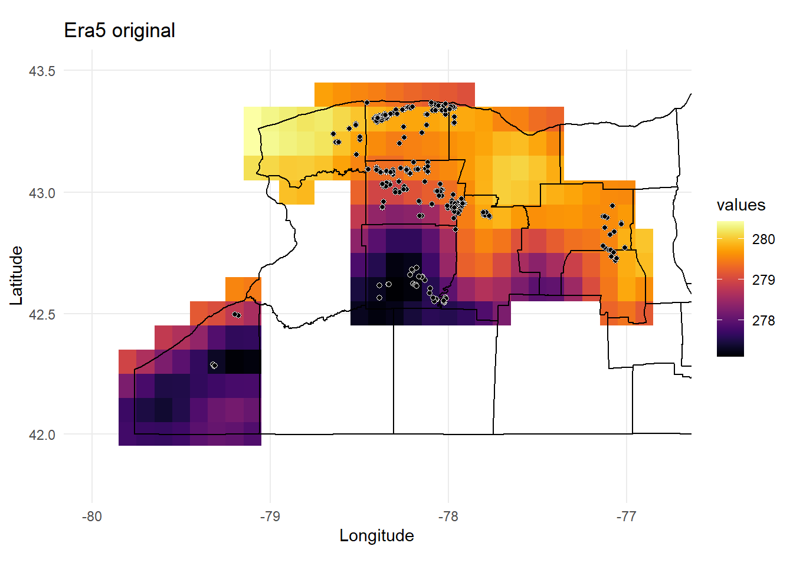
Downloading Digital elevation model (DEM)
Function to plot the DEM
source("functions/Plot_Covs.R")Downloading DEM
Covs_ls <- download_DEM(
Train_ras = a2,
Target_res = .02,
Shape = ny_shape,
Dir = Dir.StateShp,
Keep_Temporary = TRUE
)
Plot_Covs(Covs_ls)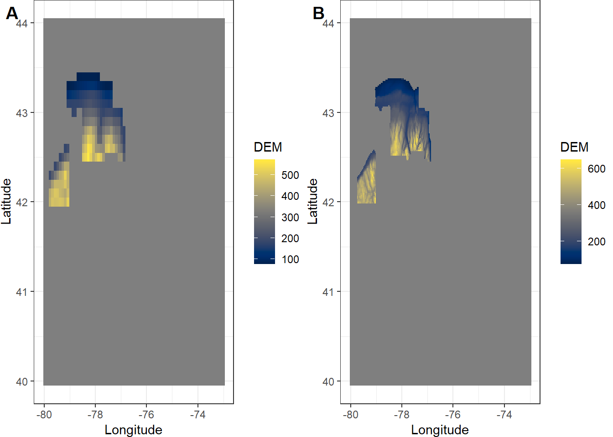
Visualization
…Using ggplot2
as.data.frame(Covs_ls[[2]], xy = T) %>%
filter(!is.na(DEM)) %>%
ggplot() +
geom_tile(aes(x,y,fill = DEM))+
geom_polygon(data = ny_shape1,
aes(x=long, y = lat, group = group),
fill= NA,
color = "black")+
geom_point(data = wm_data2, size = 0.1,
aes(longitude,latitude))+
scale_fill_gradientn(colors=met.brewer("Homer2", direction = -1))+
coord_map(xlim = c(-80,-76.8), ylim = c(41.8,43.5))+
labs(x = "Longitude",
y = "Latitude",
title= "Era5 original")+
theme_void()+
theme(legend.position = "none")Regions defined for each Polygons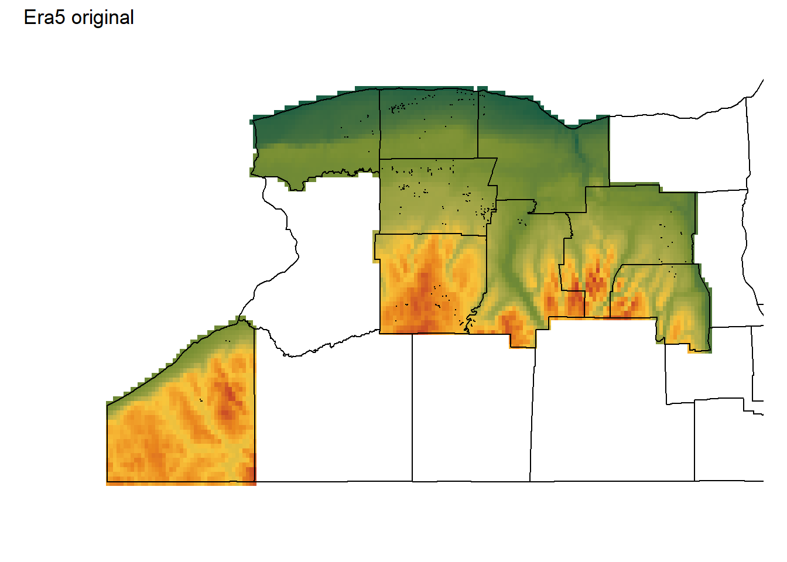
ggsave("figs/maps/elevation.png", dpi = 600, height = 5, width = 7, bg = "white")Kringing
This function performs kriging of the weather variables as function of the DEM data
KrigStart <- Sys.time()
State_Krig <- krigR(
Data = a2, # what to krig
Covariates_coarse = Covs_ls[[1]], # covariates at training resolution
Covariates_fine = Covs_ls[[2]], # covariates at target resolution
Keep_Temporary = FALSE, # delete temporary krigs of layers
Cores = 1, # only run this on 1 core
FileName = "State_Shape.nc", # save the finished file as this _t2m_2008.nc
Dir = Dir.StateShp # where to save the output
)Commencing KrigingKriging of remaining 0 data layers should finish around: 2022-06-22 17:24:26
|
| | 0%
|
|======================================================================| 100%KrigStop <- Sys.time()
KrigStop-KrigStartTime difference of 2.086116 secsplot(State_Krig$Kriging_SE)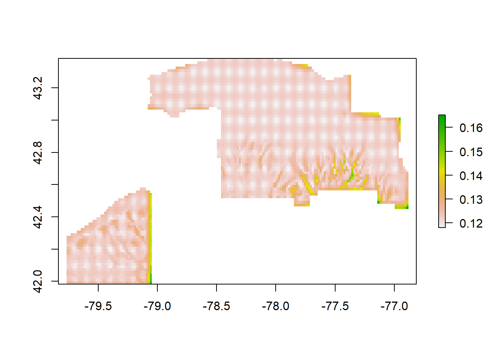
Visualization
Krigs = State_Krig$Kriging_Output
# Krigs = State_Krig$Kriging_SE
Krig_df <- as.data.frame(Krigs[[1]], xy = TRUE)
colnames(Krig_df)[3] <- "values"
krig_g = Krig_df %>%
filter(!is.na(values)) %>%
ggplot()+
geom_tile(aes(x, y, fill = values))+
geom_polygon(data = ny_shape1,
aes(x=long, y = lat, group = group),
fill= NA,
color = "black")+
scale_fill_viridis(option="B")+
# scale_color_viridis(option="B")+
geom_point(data = wm_data2,
shape = 21,
color = "white",
fill = "black",
aes(longitude,latitude))+
coord_map()+
labs(x = "Longitude",
y = "Latitude",
title= "Era5 kriged")Regions defined for each Polygonsori_g + krig_g +
plot_layout(ncol = 1) &
coord_map(xlim = c(-80,-76.8), ylim = c(41.8,43.5))&
theme_minimal()Coordinate system already present. Adding new coordinate system, which will replace the existing one.Coordinate system already present. Adding new coordinate system, which will replace the existing one.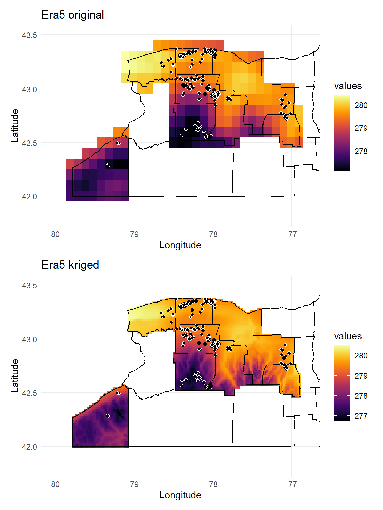
Daily summaries
par(mfrow=c(1,3))
plot(mean(t2m_all[[1:24]]))
maps::map('county', region = 'new york', col = "#5E610B", add = TRUE)
plot(min(t2m_all[[1:24]]))
maps::map('county', region = 'new york', col = "#5E610B", add = TRUE)
plot(max(t2m_all[[1:24]]))
maps::map('county', region = 'new york', col = "#5E610B", add = TRUE)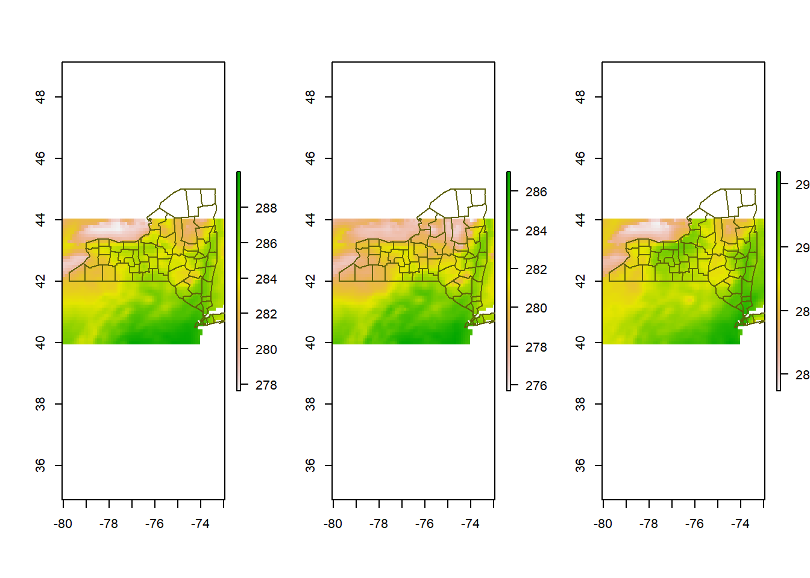
# days_in_month(month)
year = 2006:2008
month = 4:10
day = 01:31
hour = as.numeric(seq(0,23,1))
data_era5 = expand_grid(year, month, day) %>%
dplyr::filter(month != 4 | day != 31,
month != 6 | day != 31,
month != 9 | day != 31)%>%
unite(date, year, month, day,sep="-",remove = F ) %>%
mutate(date = as.Date(date))Function for calculating the summaries
mean_raster = function(i, stack_obj){
mean(stack_obj[[i:(i+23)]])
}
min_raster = function(i, stack_obj){
min(stack_obj[[i:(i+23)]])
}
max_raster = function(i, stack_obj){
max(stack_obj[[i:(i+23)]])
}Lapply
days_i = seq(1,length(data_era5$day)*24,by = 24)
time_start = Sys.time()
# dew point
aa1 = lapply(days_i, mean_raster, stack_obj= d2m_all)
d2m_mean_daily_stack = mask(stack(aa1), a21)
writeCDF(rast(d2m_mean_daily_stack),
"data_era5/daily_summaries/d2m_mean_daily.nc",
overwrite=TRUE)
# temperature
### mean
aa2 = lapply(days_i, mean_raster, stack_obj= t2m_all)
t2m_mean_daily_stack = mask(stack(aa2), a21)
writeCDF(rast(t2m_mean_daily_stack),
"data_era5/daily_summaries/t2m_mean_daily.nc",
overwrite=TRUE)
### minimum
aa3 = lapply(days_i, min_raster, stack_obj= t2m_all)
t2m_min_daily_stack = mask(stack(aa3), a21)
writeCDF(rast(t2m_min_daily_stack),
"data_era5/daily_summaries/t2m_min_daily.nc",
overwrite=TRUE)
### maximum
aa4 = lapply(days_i, max_raster, stack_obj= t2m_all)
t2m_max_daily_stack = mask(stack(aa4), a21)
writeCDF(rast(t2m_max_daily_stack),
"data_era5/daily_summaries/t2m_max_daily.nc",
overwrite=TRUE)
# Surface pressure
aa5 = lapply(days_i, mean_raster, stack_obj= sp_all)
sp_mean_daily_stack = mask(stack(aa5), a21)
writeCDF(rast(sp_mean_daily_stack),
"data_era5/daily_summaries/sp_mean_daily.nc",
overwrite=TRUE)
# Soil moisture
aa6 = lapply(days_i, mean_raster, stack_obj= swvl1_all)
swvl1_mean_daily_stack = mask(stack(aa6), a21)
writeCDF(rast(swvl1_mean_daily_stack),
"data_era5/daily_summaries/swvl1_mean_daily.nc",
overwrite=TRUE)
# soil temperature
aa7 = lapply(days_i, mean_raster, stack_obj= stl1_all)
stl1_mean_daily_stack = mask(stack(aa7), a21)
writeCDF(rast(stl1_mean_daily_stack),
"data_era5/daily_summaries/stl1_mean_daily.nc",
overwrite=TRUE)
time_end = Sys.time()
time_end -time_startplot(stl1_mean_daily_stack$X1)
maps::map('county', region = 'new york', add = TRUE)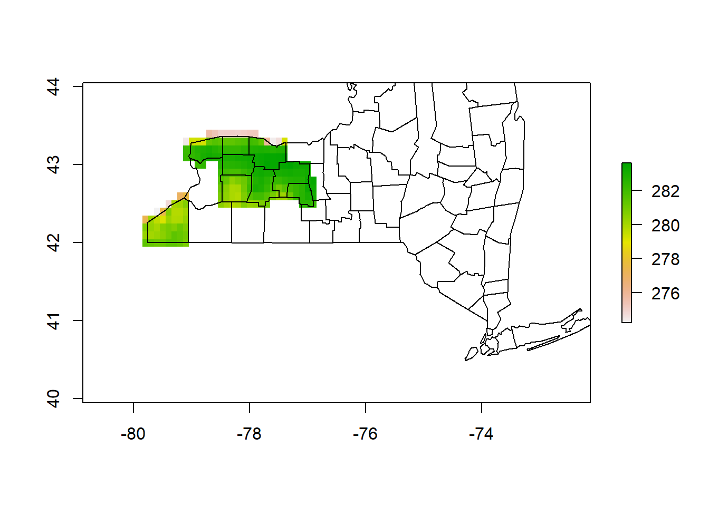
Download DEM
Dir.krigd_var <- file.path("data_era5/kriged")
Covs_ls <- download_DEM(
Train_ras = d2m_mean_daily_stack,
Target_res = .02,
Shape = ny_shape,
Dir = Dir.krigd_var,
Keep_Temporary = TRUE
)
Plot_Covs(Covs_ls)Kriging the daily summaries
Dew point
# time_start =Sys.time()
d2m_mean_daily_Krig <- krigR(
Data = d2m_mean_daily_stack, # what to krig
Covariates_coarse = Covs_ls[[1]], # covariates at training resolution
Covariates_fine = Covs_ls[[2]], # covariates at target resolution
Keep_Temporary = FALSE, # delete temporary krigs of layers
Cores = 8, # only run this on 1 core
FileName = "d2m_mean_daily_krig.nc", # save the finished file as this
Dir = Dir.krigd_var # where to save the output
)Mean Temeperature
t2m_mean_daily_Krig <- krigR(
Data = t2m_mean_daily_stack, # what to krig
Covariates_coarse = Covs_ls[[1]], # covariates at training resolution
Covariates_fine = Covs_ls[[2]], # covariates at target resolution
Keep_Temporary = FALSE, # delete temporary krigs of layers
Cores = 8, # only run this on 1 core
FileName = "t2m_mean_daily_Krig.nc", # save the finished file as this
Dir = Dir.krigd_var # where to save the output
)Minimum temperature
t2m_min_daily_Krig <- krigR(
Data = t2m_min_daily_stack, # what to krig
Covariates_coarse = Covs_ls[[1]], # covariates at training resolution
Covariates_fine = Covs_ls[[2]], # covariates at target resolution
Keep_Temporary = FALSE, # delete temporary krigs of layers
Cores = 8, # only run this on 1 core
FileName = "t2m_min_daily_Krig.nc", # save the finished file as this
Dir = Dir.krigd_var # where to save the output
)Maximum temperature
t2m_max_daily_Krig <- krigR(
Data = t2m_max_daily_stack, # what to krig
Covariates_coarse = Covs_ls[[1]], # covariates at training resolution
Covariates_fine = Covs_ls[[2]], # covariates at target resolution
Keep_Temporary = FALSE, # delete temporary krigs of layers
Cores = 8, # only run this on 1 core
FileName = "t2m_max_daily_Krig.nc", # save the finished file as this
Dir = Dir.krigd_var # where to save the output
)Surface pressure
sp_mean_daily_Krig <- krigR(
Data = sp_mean_daily_stack, # what to krig
Covariates_coarse = Covs_ls[[1]], # covariates at training resolution
Covariates_fine = Covs_ls[[2]], # covariates at target resolution
Keep_Temporary = FALSE, # delete temporary krigs of layers
Cores = 8, # only run this on 1 core
FileName = "sp_mean_daily_Krig.nc", # save the finished file as this
Dir = Dir.krigd_var # where to save the output
)Soil temperature
stl1_mean_daily_Krig <- krigR(
Data = stl1_mean_daily_stack, # what to krig
Covariates_coarse = Covs_ls[[1]], # covariates at training resolution
Covariates_fine = Covs_ls[[2]], # covariates at target resolution
Keep_Temporary = FALSE, # delete temporary krigs of layers
Cores = 8, # only run this on 1 core
FileName = "stl1_mean_daily_Krig.nc", # save the finished file as this
Dir = Dir.krigd_var # where to save the output
)
# time_end = Sys.time()
# time_end -time_startSoil moisture
swvl1_mean_daily_Krig <- krigR(
Data = swvl1_mean_daily_stack, # what to krig
Covariates_coarse = Covs_ls[[1]], # covariates at training resolution
Covariates_fine = Covs_ls[[2]], # covariates at target resolution
Keep_Temporary = FALSE, # delete temporary krigs of layers
Cores = 8, # only run this on 1 core
FileName = "swvl1_mean_daily_Krig.nc", # save the finished file as this
Dir = Dir.krigd_var # where to save the output
)
# time_end = Sys.time()
# time_end -time_start
plot(swvl1_mean_daily_Krig$Kriging_SE$var1.stdev.1)krigR_temporal = function(i, data){
cov1 = stl1_mean_daily_stack[[i]]
names(cov1) = c("soilT")
cov2 = stl1_mean_daily_Krig$Kriging_Output[[i]]
names(cov2) = c("soilT")
Covs_ls2 = list(cov1, cov2)
datax = crop(swvl1_mean_daily_stack[[i]],a21)
xxxx <- krigR(
Data = data[[i]], # what to krig
Covariates_coarse = Covs_ls2[[1]], # covariates at training resolution
Covariates_fine = Covs_ls2[[2]], # covariates at target resolution
Keep_Temporary = FALSE, # delete temporary krigs of layers
KrigingEquation = "ERA ~ soilT",
Cores = 8, # only run this on 1 core
FileName = "swvl1_mean_daily_Krig2.nc", # save the finished file as this
Dir = Dir.krigd_var # where to save the output
)
return(xxxx$Kriging_Output)
}
nlayers = length(swvl1_mean_daily_stack@layers)
swvl1_mean_daily_Krig2 = stack(lapply(X = 1:nlayers, FUN = krigR_temporal,data = swvl1_mean_daily_stack ))
writeCDF(rast(swvl1_mean_daily_Krig2),
"data_era5/kriged/swvl1_mean_daily_Krig2.nc",
overwrite=TRUE)d2m_mean_daily_Krig = stack("data_era5/kriged/d2m_mean_daily_Krig.nc")
t2m_mean_daily_Krig = stack("data_era5/kriged/t2m_mean_daily_Krig.nc")
t2m_min_daily_Krig = stack("data_era5/kriged/t2m_min_daily_Krig.nc")
t2m_max_daily_Krig = stack("data_era5/kriged/t2m_max_daily_Krig.nc")
sp_mean_daily_Krig = stack("data_era5/kriged/sp_mean_daily_Krig.nc")
swvl1_mean_daily_Krig = stack("data_era5/kriged/swvl1_mean_daily_Krig.nc")
stl1_mean_daily_Krig = stack("data_era5/kriged/stl1_mean_daily_Krig.nc")Ploting the kingued maps (first layer)
par(mfrow=c(2,4))
plot(t2m_mean_daily_Krig$X1, main = "Mean Temp")
plot(t2m_min_daily_Krig$X1, main = "Min Temp")
plot(t2m_max_daily_Krig$X1, main = "Max Temp")
plot(d2m_mean_daily_Krig$X1, main = "Dew Point")
plot(sp_mean_daily_Krig$X1, main = "Surface Pressure")
plot(swvl1_mean_daily_Krig$X1, main = "Soil Moisture")
plot(stl1_mean_daily_Krig$X1, main = "Soil Temp")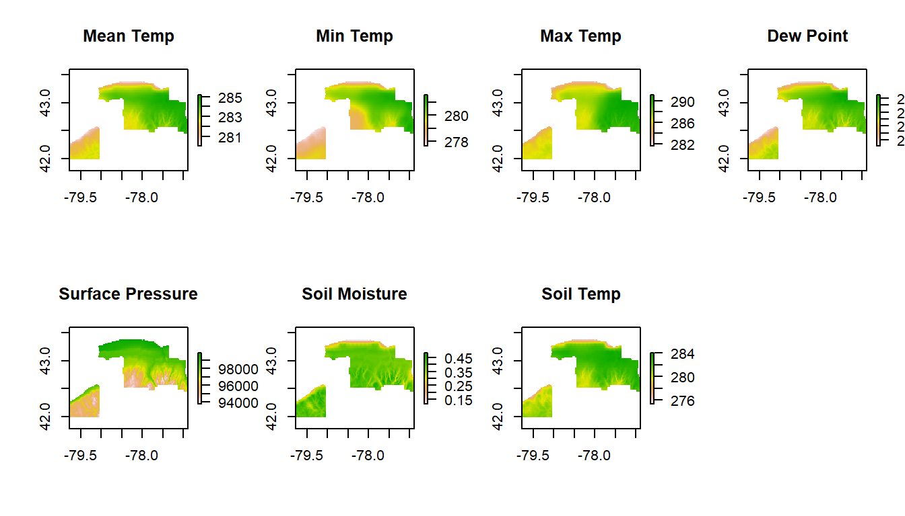
Using ggplot
# t2m_max_daily_stack
Krigs = t2m_max_daily_stack$X1
Krig_df <- as.data.frame(Krigs[[1]], xy = TRUE)
colnames(Krig_df)[3] <- "values"
max_t_ori = Krig_df %>%
filter(!is.na(values)) %>%
ggplot()+
geom_polygon(data = ny_shape1,
aes(x=long, y = lat, group = group),
fill= "white",
color = "black")+
geom_tile(aes(x, y, fill = values-273.15))+
geom_polygon(data = ny_shape1,
aes(x=long, y = lat, group = group),
fill= NA,
color = "black")+
scale_fill_viridis(option="B", limits = c(5,18),breaks =seq(5, 18, by = 3))+
# scale_color_viridis(option="B")+
geom_point(data = wm_data2,
shape = 21,
color = "white",
fill = "black",
aes(longitude,latitude))+
coord_map(xlim = c(-80,-76.8), ylim = c(41.8,43.5))+
labs(x = "Longitude",
y = "Latitude",
fill = "Max Temperature (°C)",
title= "Era5 Native Resolution (0.1° x 0.1°)")Regions defined for each Polygons
Regions defined for each Polygons# max_t_oriKrigs = t2m_max_daily_Krig$X1
Krig_df <- as.data.frame(Krigs[[1]], xy = TRUE)
colnames(Krig_df)[3] <- "values"
max_t_krig = Krig_df %>%
filter(!is.na(values)) %>%
ggplot()+
geom_polygon(data = ny_shape1,
aes(x=long, y = lat, group = group),
fill= "white",
color = "black")+
geom_tile(aes(x, y, fill = values-273.15))+
geom_polygon(data = ny_shape1,
aes(x=long, y = lat, group = group),
fill= NA,
color = "black")+
scale_fill_viridis(option="B", limits = c(5,18), breaks =seq(5, 18, by = 3))+
# scale_color_viridis(option="B")+
geom_point(data = wm_data2,
shape = 21,
color = "white",
fill = "black",
aes(longitude,latitude))+
coord_map(xlim = c(-80,-76.8), ylim = c(41.8,43.5))+
labs(x = "Longitude",
y = "Latitude",
fill = "Max Temperature (°C)",
title= "Era5 Kriged (0.02° x 0.02°)")Regions defined for each Polygons
Regions defined for each Polygonsmax_t_ori + max_t_krig +
plot_layout(ncol = 2, guides = "collect") &
theme_map()&
theme(legend.position = "bottom",
legend.text = element_text(size = 9))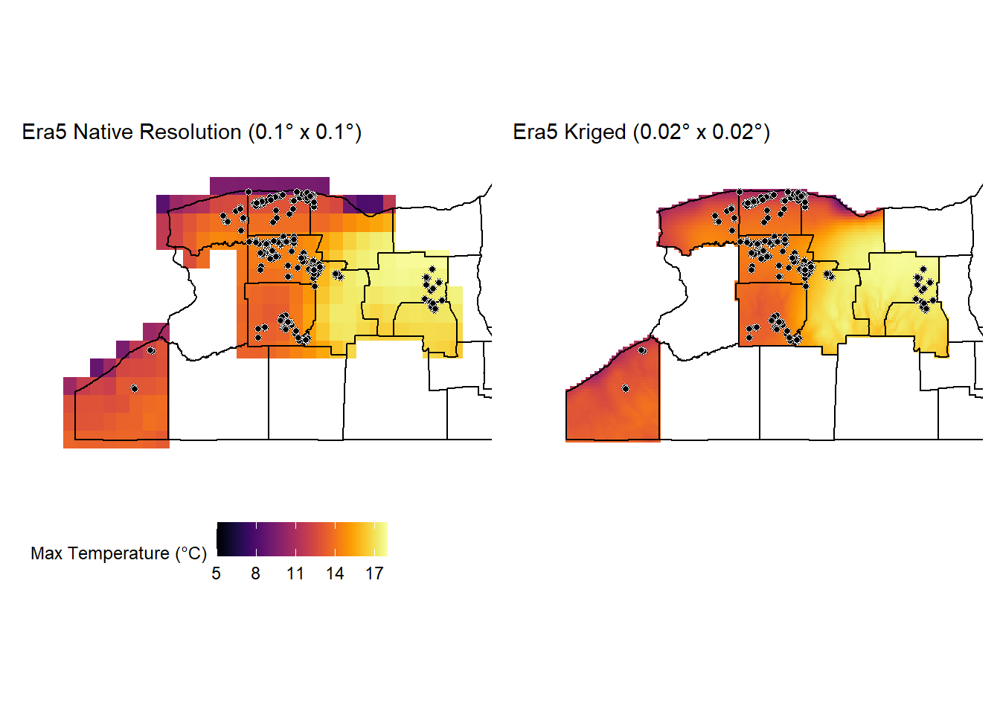
# ggsave("figs/max_t.png",dpi=900, height = 8, width=14, bg = "white")Relative humidity
How to calculate relative humidity here link and here link
\[RH = \frac{es(d2m)}{es(t2m)}*100\]
\(es()\) is Saturation vapor pressure and can be calculated as
\[es(T) = \alpha_1*exp( \alpha_3*(\frac{T-t0}{T-\alpha_4}))\],
where \(T\) is the temperature, \(\alpha_1 = 611.21\), \(\alpha_2 = 17.502\), \(\alpha_3 = 32.19\).
Using these resources, I build the function to calculates RH from Temperature and dew point.
es =function(Temp){
t0 = 273.16
alpha1 = 611.21
alpha3 = 17.502
alpha4 = 32.19
alpha1*exp( alpha3*((Temp-t0)/(Temp-alpha4)))
}
#test
Tdp = 14+273.15
T2m = 31+273.15
es(Tdp)/es(T2m)*100[1] 35.55801Creating the raster object of relative humidity
layer_i = 1:nlayers(d2m_mean_daily_Krig)
calculate_RH = function(i, d2m_stack, t2m_stack){
es(d2m_stack[[i]])/es(t2m_stack[[i]])*100
}
list_rh = lapply(layer_i, calculate_RH, d2m_stack = d2m_mean_daily_Krig,t2m_stack= t2m_mean_daily_Krig)
rh_mean_daily_Krig = brick(list_rh)
writeCDF(rast(rh_mean_daily_Krig),
"data_era5/kriged/rh_mean_daily_Krig.nc",
overwrite=TRUE)rh_mean_daily_Krig = stack("data_era5/kriged/rh_mean_daily_Krig.nc")
plot(rh_mean_daily_Krig$X1, main = "Relative Humidity")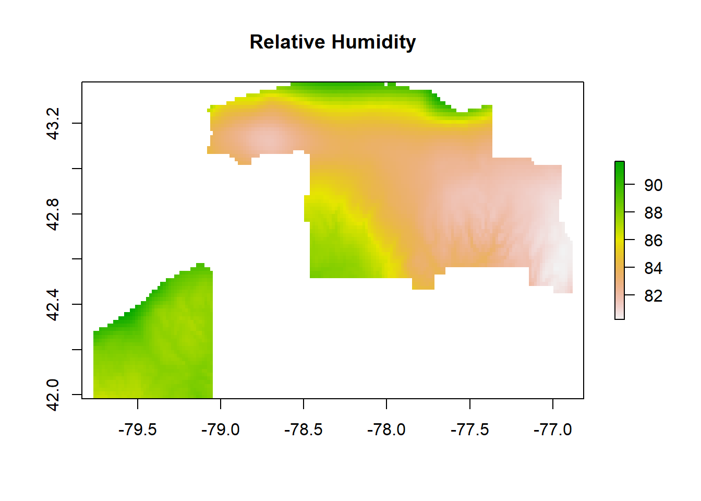
Extracting data
wm_data2_uni = wm_data2 %>%
group_by(subject) %>%
slice(1L)coords<-data.frame(lon=wm_data2_uni$longitude, lat=wm_data2_uni$latitude)
coordinates(coords)<-c("lon","lat")- Dew point
ext_d2m = extract(d2m_mean_daily_Krig, coords)
colnames(ext_d2m) = as.character(data_era5$date)
ext_d2m_coord = cbind(longitude=wm_data2_uni$longitude,
latitude=wm_data2_uni$latitude,
ext_d2m )
d2m_mean_wm = as.data.frame(ext_d2m_coord) %>%
mutate(subject =wm_data2_uni$subject) %>%
pivot_longer(3:644,
values_to = "d2m",
names_to = "date")%>%
mutate(date = as.Date(date))
d2m_mean_wm# A tibble: 241,392 × 5
longitude latitude subject date d2m
<dbl> <dbl> <int> <date> <dbl>
1 -77.9 42.9 1 2006-04-01 282.
2 -77.9 42.9 1 2006-04-02 271.
3 -77.9 42.9 1 2006-04-03 276.
4 -77.9 42.9 1 2006-04-04 270.
5 -77.9 42.9 1 2006-04-05 266.
6 -77.9 42.9 1 2006-04-06 272.
7 -77.9 42.9 1 2006-04-07 275.
8 -77.9 42.9 1 2006-04-08 268.
9 -77.9 42.9 1 2006-04-09 268.
10 -77.9 42.9 1 2006-04-10 270.
# … with 241,382 more rows- Mean Temperature
ext_t2m_mean = extract(t2m_mean_daily_Krig, coords)
colnames(ext_t2m_mean) = as.character(data_era5$date)
ext_t2m_mean_coord = cbind(longitude=wm_data2_uni$longitude,
latitude=wm_data2_uni$latitude,
ext_t2m_mean)
t2m_mean_wm = as.data.frame(ext_t2m_mean_coord) %>%
mutate(subject =wm_data2_uni$subject)%>%
pivot_longer(3:644,
values_to = "t2m_mean",
names_to = "date")%>%
mutate(date = as.Date(date))- Max Temperature
ext_t2m_max = extract(t2m_max_daily_Krig, coords)
colnames(ext_t2m_max) = as.character(data_era5$date)
ext_t2m_max_coord = cbind(longitude=wm_data2_uni$longitude,
latitude=wm_data2_uni$latitude,
ext_t2m_max)
t2m_max_wm = as.data.frame(ext_t2m_max_coord) %>%
mutate(subject =wm_data2_uni$subject)%>%
pivot_longer(3:644,
values_to = "t2m_max",
names_to = "date")%>%
mutate(date = as.Date(date))- Min Temperature
ext_t2m_min = extract(t2m_min_daily_Krig, coords)
colnames(ext_t2m_min) = as.character(data_era5$date)
ext_t2m_min_coord = cbind(longitude=wm_data2_uni$longitude,
latitude=wm_data2_uni$latitude,
ext_t2m_min)
t2m_min_wm = as.data.frame(ext_t2m_min_coord) %>%
mutate(subject =wm_data2_uni$subject)%>%
pivot_longer(3:644,
values_to = "t2m_min",
names_to = "date")%>%
mutate(date = as.Date(date))- Pressure
ext_sp = extract(sp_mean_daily_Krig, coords)
colnames(ext_sp) = as.character(data_era5$date)
ext_sp_coord = cbind(longitude=wm_data2_uni$longitude,
latitude=wm_data2_uni$latitude,
ext_sp )
sp_mean_wm = as.data.frame(ext_sp_coord) %>%
mutate(subject =wm_data2_uni$subject)%>%
pivot_longer(3:644,
values_to = "sp",
names_to = "date")%>%
mutate(date = as.Date(date))- Soil moisture
ext_sm = extract(swvl1_mean_daily_Krig, coords)
colnames(ext_sm) = as.character(data_era5$date)
ext_sm_coord = cbind(longitude=wm_data2_uni$longitude,
latitude=wm_data2_uni$latitude,
ext_sm )
sm_mean_wm = as.data.frame(ext_sm_coord)%>%
mutate(subject =wm_data2_uni$subject) %>%
pivot_longer(3:644,
values_to = "sm",
names_to = "date")%>%
mutate(date = as.Date(date))- Relative humidity
ext_rh = extract(rh_mean_daily_Krig, coords)
colnames(ext_rh) = as.character(data_era5$date)
ext_rh_coord = cbind(longitude=wm_data2_uni$longitude,
latitude=wm_data2_uni$latitude,
ext_rh )
rh_mean_wm = as.data.frame(ext_rh_coord)%>%
mutate(subject =wm_data2_uni$subject)%>%
pivot_longer(3:644,
values_to = "rh",
names_to = "date") %>%
mutate(date = as.Date(date))- Soil temperature
ext_st = extract(stl1_mean_daily_Krig, coords)
colnames(ext_st) = as.character(data_era5$date)
ext_st_coord = cbind(longitude=wm_data2_uni$longitude,
latitude=wm_data2_uni$latitude,
ext_st )
st_mean_wm = as.data.frame(ext_st_coord) %>%
mutate(subject =wm_data2_uni$subject)%>%
pivot_longer(3:644,
values_to = "st",
names_to = "date") %>%
mutate(date = as.Date(date))Binding data sets
weather_all_wm = d2m_mean_wm %>%
bind_cols(t2m_mean_wm[,5],
t2m_max_wm[,5],
t2m_min_wm[,5],
sp_mean_wm[,5],
sm_mean_wm[,5],
rh_mean_wm[,5],
st_mean_wm[,5])
weather_all_wm# A tibble: 241,392 × 12
longitude latitude subject date d2m t2m_mean t2m_max t2m_min sp
<dbl> <dbl> <int> <date> <dbl> <dbl> <dbl> <dbl> <dbl>
1 -77.9 42.9 1 2006-04-01 282. 284. 289. 281. 97567.
2 -77.9 42.9 1 2006-04-02 271. 279. 285. 273. 98578.
3 -77.9 42.9 1 2006-04-03 276. 282. 290. 277. 97387.
4 -77.9 42.9 1 2006-04-04 270. 277. 284. 273. 97250.
5 -77.9 42.9 1 2006-04-05 266. 273. 277. 270. 97416.
6 -77.9 42.9 1 2006-04-06 272. 276. 283. 273. 97868.
7 -77.9 42.9 1 2006-04-07 275. 278. 281. 275. 97193.
8 -77.9 42.9 1 2006-04-08 268. 274. 277. 271. 97920.
9 -77.9 42.9 1 2006-04-09 268. 275. 282. 270. 98859.
10 -77.9 42.9 1 2006-04-10 270. 278. 288. 272. 99093.
# … with 241,382 more rows, and 3 more variables: sm <dbl>, rh <dbl>, st <dbl>Saving data
data_full = weather_all_wm %>%
dplyr::select(-latitude, -longitude) %>%
full_join(wm_data2, by = "subject")
write.csv(data_full, "data_white-mold/data_model_plus_weather.csv",row.names = F)data_full = read.csv("data_white-mold/data_model_plus_weather.csv") %>%
mutate(date = as.Date(date),
sampling.date = as.Date(sampling.date),
planting.date = as.Date(planting.date))filter between planting and sampling dates
data_fill_filtered = data_full %>%
filter(date >= (planting.date-30) & date <= sampling.date)write.csv(data_fill_filtered, "data_white-mold/data_model_plus_weather_filtered.csv",row.names = F)data_fill_filtered = read.csv("data_white-mold/data_model_plus_weather_filtered.csv")